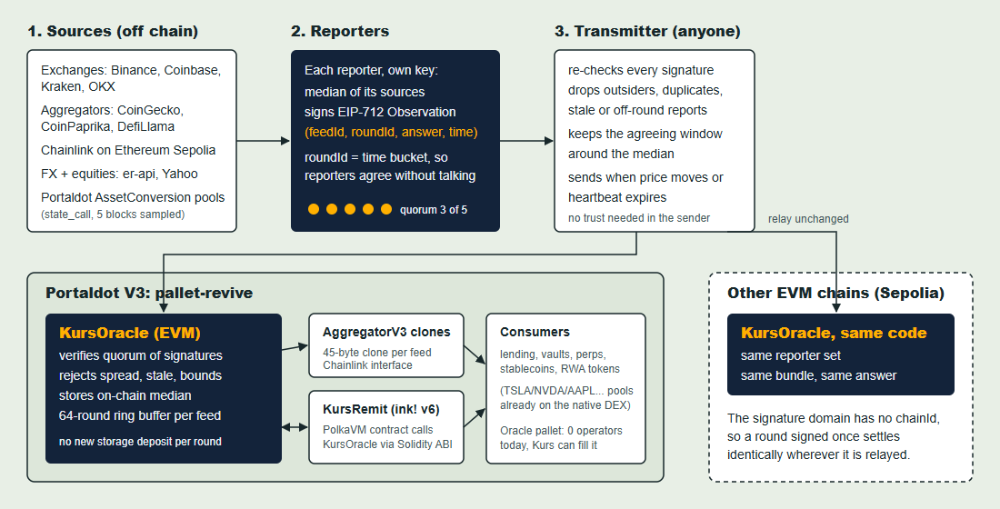

Portaldot Hacker House 2026 · Multi-Chain & Cross-Chain Infra
Price feeds for Portaldot V3, signed by independent reporters, readable from Solidity and ink!, portable to any EVM chain.
Kurs: Indonesian for exchange rate, the number on every money-changer board.
| Checked on V3 testnet, spec 3002 | Found |
|---|---|
| Oracle pallet (index 85) | 0 values |
| Oracle operator set | empty |
| Oracle precompile for EVM | none |
| Chainlink, Pyth, RedStone | not deployed |
| Tokenised stocks on the native DEX | TSLA, NVDA, AAPL, AMZN, META |
| Hacker-house lending, stablecoin, escrow apps | a dozen and counting |
Route one TSLA token through Portaldot's own pools (TSLA → DUCAT → tPOT → pUSD) and you get about $0.04.
Kurs says about $410.
A lending market that prices collateral from these pools can be drained by anyone with a few swaps. That is how most DeFi exploits start.
A minority of dishonest reporters cannot move the median, and cannot forge a round.
04
05Dual VM in one pallet. Solidity reads Kurs through the Chainlink interface. ink! v6 reads the same contract through a Solidity-ABI call. One oracle, not two.
A native price to export. tPOT/pUSD comes from pallet-asset-conversion through a runtime API, sampled over 20 minutes of blocks, then relayed to Ethereum with the same signatures.
A slot already waiting. The runtime ships an Oracle pallet with no operators. Kurs reporters are ready to fill it, so native pallets and contracts read the same prices.
Built for Revive's costs. A 64-round ring buffer and 45-byte clones mean a new round adds no storage deposit.
feeds: BTC, ETH, DOT, USDT, USD/IDR, five equities, tPOT
tests: 29 Solidity incl. fuzz, 16 TypeScript incl. anvil e2e, 16 Playwright incl. accessibility
VMs reading one oracle: EVM and PolkaVM (ink! v6)
reporters, quorum 3, median on chain
servers: the dashboard reads public RPCs in the browser
ways in: pushed by the relay, or pulled into your own transaction with ERC-7412
| What | Where |
|---|---|
| KursOracle v2, factory, 11 feed clones, KursConverter | Ethereum Sepolia, oracle 0xd3f6…cbc3, all verified on Sourcify |
| Rounds pushed by 5 reporters, every signer on chain | RoundUpdated events, re-verified in the browser by the dashboard |
| ERC-7412 pull in one transaction | Multicall3: fulfillOracleQuery + convert, tx 0x9e2a…405f |
| ink! v6 reads the Solidity oracle | pallet-revive node: KursRemit.latest() equals the oracle round |
| Portaldot-native price on Ethereum | tPOT/pUSD from AssetConversion, live on Sepolia |
| Live on Portaldot V3 | KursOracle 0x5bdd…56f4, 11 feeds, rounds every ~64 min at ~0.1 tPOT, mirrored to Sepolia |
Every address and transaction hash: github.com/PugarHuda/kurs/blob/main/docs/evidence.md · live: kurs-ten-zeta.vercel.app
Users: every Portaldot app that moves value against a price. Lending (DotProof), stablecoins (Ballast, StableTap, pUSD), tokenised stocks (PASTX pools), escrow and payroll in IDR.
Feed sponsorship: an app pays a monthly POT fee per feed it needs at a given heartbeat. Sponsors fund reporter rewards and transmit gas.
Export fees: Portaldot-native prices (tPOT, ecosystem tokens) relayed to Ethereum, BNB and Base for bridges and CEX listings.
Reporter market: community operators stake POT to join the set and earn from sponsorship. Misbehaviour is visible on chain in every round's signer bitmap.
Pugar Huda Mantoro
Built pdk, the Portaldot Dev Kit: 1st place, Portaldot Online Mini Hackathon S1, Builder Tools. Published on PyPI and npm.
Kurs is open source under MIT: github.com/PugarHuda/kurs